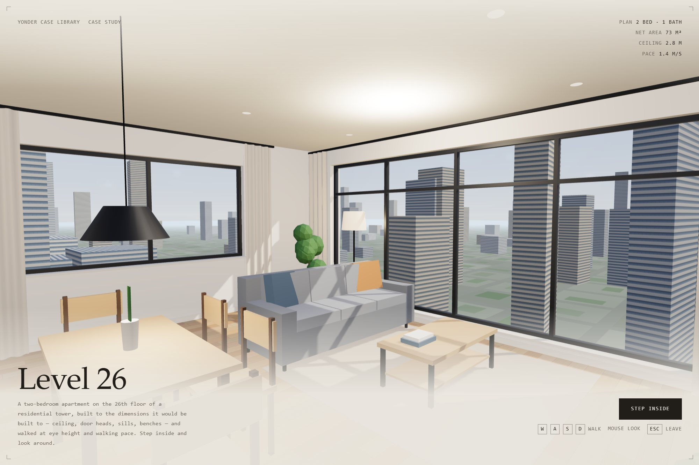
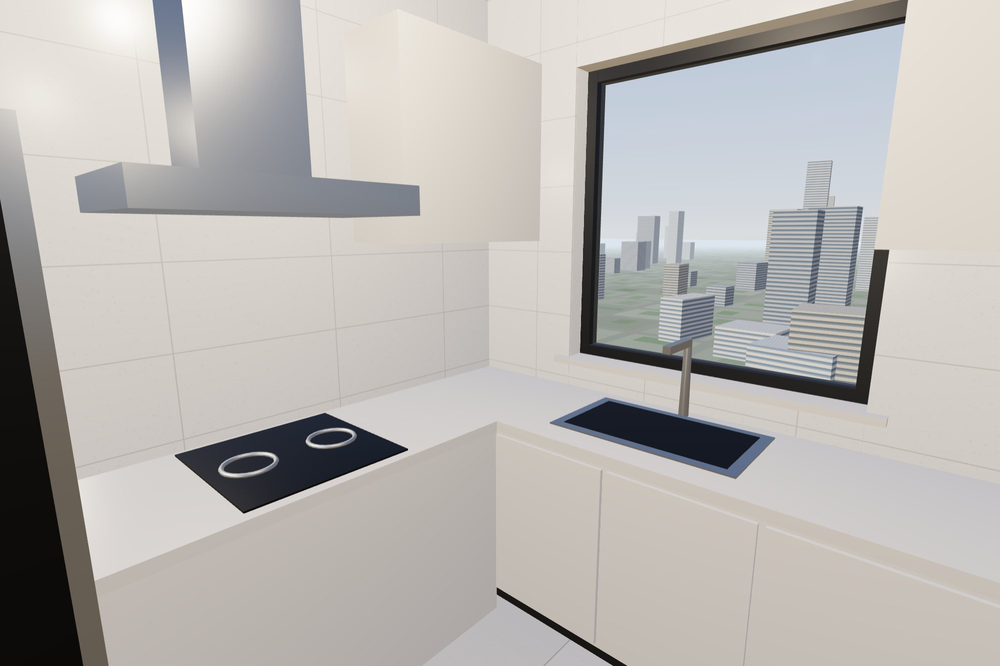
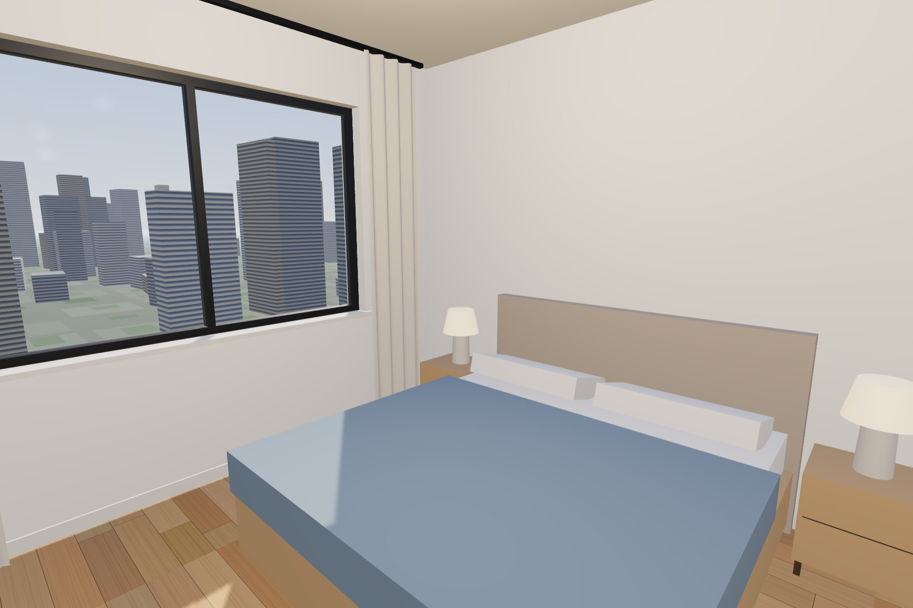

A two-bedroom apartment on the 26th floor of a residential tower, walked in first person: keys to move,
the mouse to look, Esc to leave. Nobody measures a room when they walk into it, but everybody knows
straight away when it is the wrong size — so every dimension here is the one the unit would actually be
built to.

Type
Concept · self-directed
Discipline
Real-time 3D · Web
Plan
2 bed · 1 bath · 73 m² net
Payload
No models, no image files
The brief
An off-the-plan apartment is sold before it exists, from a floor plan and a few renders. A render
shows a room at its best angle; it cannot tell a buyer whether the hallway is comfortable, whether
the table fits, or how far the bedroom is from the front door. Walking through it can — as long as
the walk is honest.
So the brief was a unit you walk rather than look at: two bedrooms, one living room, one bathroom, in
a tower, with the ceiling, the doors, the windows and the pace all at the size a person would feel
them.
Design decisions
Real dimensions, not a look
One unit is one metre. The ceiling is 2.8 m clear, door heads are 2.1 m, sills 0.9 m, benches
0.86 m, dining chairs seat at 0.45 m. The eye is at 1.6 m and the walk is 1.4 m/s — the pace of
an adult looking around, not a game character.
You collide with the flat
Walls, glazing, furniture and open door leaves all stop you, and you slide along them rather
than sticking. If a doorway or a gap between furniture is too tight to pass through, it is too
tight to live with.
A tower, not a stage set
The unit sits 75 m up, with the storeys below and above, a neighbouring unit, a lift core
behind the front door and a city laid out to the horizon — because the view is what people
pay for on the 26th floor.
The dimensions
Floor to floor / clear ceiling
3.0 m / 2.8 m
Interior doors
0.8–0.9 m × 2.1 m
Front door
1.0 m × 2.1 m
Window sills
0.9 m (bedrooms, living) · 1.0 m (kitchen) · 1.5 m (bathroom)
Living room glazing
5.0 m × 2.35 m, from 0.15 m
Walls
240 mm exterior · 120 mm interior · 80 mm skirting
Benches / vanity
0.86 m
Eye height / pace
1.6 m / 1.4 m/s
How it is built
Every wall is declared once: an axis, a length, a thickness and a list of openings. The builder cuts
each opening out of the wall, adds the lintel and the sill, and dresses it — a door gets a casing
and a leaf hung on the right side, a window gets a frame, mullions and a stone sill. The same
declaration produces the collision boxes and the plan in the corner of the screen, so the walls you
see, the walls you bump into and the walls on the plan cannot disagree.
The floorboards, tiles and facade are painted on canvas at load and mapped in metres, so a 150 mm
board is 150 mm wherever it lands. The sun comes in low through the living room glazing and throws
real shadows across the floor; each room also has its own light, so the unit reads as lived in rather
than lit for a photograph.

North is the glazed side
In New Zealand the good side of a unit faces north. The living room, the main bedroom and the
full-height glazing all face the sun, while the entry, the kitchen, the bathroom and the second
bedroom sit on the south side. The plan in the corner is drawn north-up so that it matches.

What went wrong first
The first layout put four chairs round the dining table and the sofa just south of it. On the plan it
looked generous. Walking it, you could not get past: the chairs left 0.37 m to the kitchen wall on one
side and 0.33 m to the sofa on the other, and a person needs about half a metre. Nobody noticed until
someone tried to walk behind the table.
The fix was the kind of thing an interior designer would do: the living group moved 400 mm towards
the glazing, and two of the chairs moved to the ends of the table. There is now 0.74 m behind the
table and 0.7 m between the chairs and the sofa. That this came out of walking the flat, not from
looking at it, is the case for building walkthroughs at all.
The other early mistake was the building around the unit. The corridor block was drawn along the
whole south side, so the kitchen, bathroom and second-bedroom windows looked straight into a wall.
It was cut back to a lift core behind the front door, and the unit became dual-aspect, as a corner
unit should be.
Outcome
A 73 m² unit you can walk from the front door to every room: seven named spaces, a plan that follows
you, and a view over the city from 75 m up. It runs in a desktop browser with nothing to download
beyond the page. On a phone you can drag to look around the living room; walking needs a keyboard.